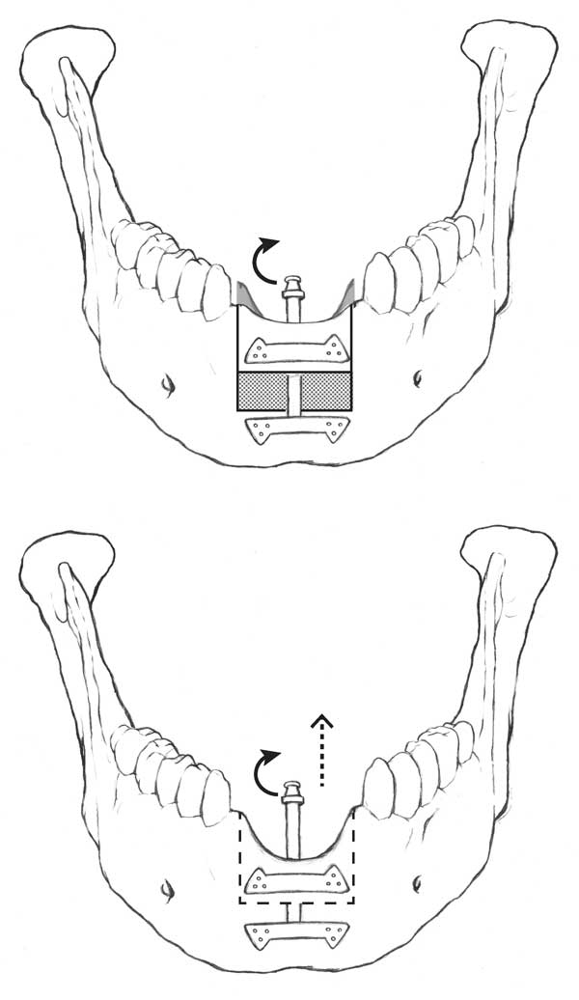

Distraction Osteogenesis
Distraction Osteogenesis has become an important part of the oral surgeon’s toolkit, providing a more successful and stable alternative for augmenting the vertical height in alveolar ridge reconstruction.
For a dental implant to support an esthetic prosthesis, it has to be placed in an ideal position in relation to the adjacent structure. If bone volume is inadequate for such placement, it is necessary to correct the deficiency prior to the surgical placement of the implant. This fact is especially important in the esthetic zone since in many cases, any inadequacy will not be camouflaged by the lips.
One of the more difficult areas of alveolar ridge reconstruction is the correction of the vertical height defect. Various bone grafting techniques have been developed and the success rate is largely dependent on the skill of the operator as well as other local factors, such as amount of scar tissue, mouth opening and tightness of oral soft tissue.
The overall success rate for reconstruction of the vertical defect with traditional bone grafting technique is less than ideal in many cases with resorption of the grafted material.
The Fundamentals of Distraction Osteogenesis
The concept of “Distraction Osteogenesis” was attempted in the early part of the 20th century by a few surgeons, but it was popularized by a Russian orthopedic surgeon, Professor Gavriel Ilizarov, who is considered to be the father of the technique.
He developed a protocol in which long bone was surgically cut and stretched with an appropriate device for a lengthening procedure. He was able to control the vector of the distraction and stabilize it during the healing-consolidating phase.
The human body has the ability to form new bone based on the law of “tension–stress force.” When body structures are being stretched gradually, they are being stimulated for further growth and regeneration. To our benefit, both bone and the surrounding tissue are lengthened simultaneously, which is a great advantage in comparison to the traditional bone grafting technique.
The formation of new bone in distraction osteogenesis is equivalent to the healing process of a fracture. Bone producing osteoblasts are being formed as the mesesnchymal cells are being stimulated during the “tension – stress” condition in the callus. During the next twelve to twenty-four months, the bone will continue to remodel and the mature bone produced is similar to the adjacent bone in size and shape.
Distraction Osteogenesis in the Modern Age
With the advent of smaller intraoral distraction devices, the reality has been met with the conversion of a vertically deficient alveolar ridge into a site where proper implant placement can be achieved in approximately three months.
Continued on next page.
 Distraction Osteogenesis Surgical Technique
- Identify the area of inadequate alveolar bone volume.
- Select a mucosal incision to gain access to the underlying alveolar bone while preserving much of the blood supply to the alveolar bone.
- Two vertical and one horizontal bone cuts are made on the deficient segment of the alveolar bone for the creation of the “transport bone segment.”
- The intraoral distraction device is placed and stabilized with mini bone screws.
- A latency period of one week is allowed for bone callus to form.
- The distraction device is then activated and advanced at 1 mm per day of vertical distraction.
- When the desired height is achieved, the distraction device is left in place for the bone callus to consolidate and mature over a three month period.
- The surgical site is re-entered, the distraction device is removed and dental implant(s) are placed at the correct position which will then allow for fabrication of an ideal esthetic prosthesis.
Advantages of Distraction Osteogenesis
The advantages of this “distraction osteogenesis” technique include over correction of the bone matrix volume, which can easily be re-contoured at a later date. It is an advantage to have more bone available than is needed that can be shaved at the re-entry step.
Another main advantage over traditional bone grafting technique is the concurrent lengthening of the surrounding tissue, such as mucosal tissue, nerves and muscles.
The problem of wound closure (with the potential of wound dehiscence) of an augmented area of the traditional grafting site is not an issue with this distraction osteogenesis technique since soft tissue is also being formed as bone is created at the distraction site. The bone produced is stable and serves as a good foundation for supporting implant(s).
Periodontal Disease in Third Molars
Research has been undertaken by the AAOMS to determine the risk of periodontal disease in patients who retain their third molars (wisdom teeth).
Recent studies have shown that periodontal disease is prevalent in two-thirds of young patients who retain their third molars. This is despite the fact that in many cases there are no clear symptoms. Additionally many of these cases were found to have increased pathology in other teeth as a result of the diseased third molars.
Furthermore, removal of the third molars in patients with verified pathology resulted in the overall reduction of periodontal disease and improved oral health.
Jaw Pain / Causes of Jaw Pain
Jaw Pain or TMJ symptoms – (TMJ is the jaw joint) may range from mild ear pain to severe pain in jaws and adjoining areas. TMJ symptoms can include a clicking jaw, a popping sound when you chew or speak and a sore jaw when you first wake. Several things can cause pain in jaw. TMJ, or Temporomandibular Joint Disorder, is often caused by asymmetrical chewing patterns, tightness of the neck and improper head posture. Jaw pain symptoms vary greatly from person to person and can affect a person through their entire upper body. The most obvious symptoms are jaw pain or a clicking noise with the opening of the lower mandible (jaw).
Jaw pain is usually the result of either parafunctional activity or of an acute trauma to the head, such as may occur with a whiplash injury or direct impact to the joints themselves. Jaw pain is not all that uncommon among people these days and if you have experienced it, you know that it is just plain uncomfortable and is arguably one of the worst types of pain one can go through. Severe pain that lasts more than a few weeks may be reason to see an oral surgeon.
Our office can help you get started on a short-term and long-term plan to alleviate much of the pain and discomfort you are experiencing.
Apnea – Are You Tired of Being Tired?
Sleep apnea is a disorder characterized by intermittent breathing lapses during the sleep cycle. Sleep apnea occurs when a person’s airways become blocked or partly blocked during sleep. The blockage occurs when the soft palate or the base of the tongue collapse at the back of the throat, causing loud snoring, temporary obstruction in nighttime breathing and daytime sleepiness. Sleep apnea prevents you from getting the rest you need because your body is actually fighting for air when you are sleeping.
Sleep apnea can also cause serious changes in the cardiovascular system. Daytime hypertension (high blood pressure) is common. Apnea is commonly seen with obesity, high blood pressure, smoking and in older males. The condition, which affects 2 percent to 4 percent of middle-aged men and women, is more common in the obese because fat deposits in the neck place an added burden on the throat. As it is the snoring that is considered the problem, it is for this reason that sufferers (and often their spouses) tend to seek treatment.
Sleep apnea often goes undiagnosed and affects an estimated 10 million people in the U.S., according to “Sleep Disorders Sourcebook.” It is a progressive condition (gets worse as you age) and should not be taken lightly. Sleep apnea and related sleep disorders can be mild to severe depending upon on the degree of air blockage to one’s lungs. Such can lead to serious health related issues and can even be life-threatening if untreated and you should consult your doctor immediately if you feel you may suffer from it. Sleep apnea might be as frightening a condition that you can ever think of. However, the right mode of treatment and initiatives from your personal end can help to combat sleep apnea and thus treat it with ease.
Reconstructive Surgery
Reconstructive surgery is performed on abnormal structures of the body caused by birth defects, developmental abnormalities, trauma or injury, infection, tumors or disease. It is generally performed to improve function but may also be done to approximate a normal appearance. Reconstructive surgery commonly corrects surface wounds and is also regularly used to treat cancerous and non-cancerous growths and the problems with the supporting structures beneath the skin. Reconstructive surgery differs from plastic surgery in one significant way. It is focused on making improvements to a damaged or abnormal part of the body.
Reconstructive surgery is used to reattach body parts severed in combat or accidents, to perform skin grafts after severe burns or to reconstruct parts of the patient’s body that were missing at birth or removed by surgery. Reconstructive surgery is the oldest form of plastic surgery, having developed out of the need to treat wounded soldiers in wartime.
Breast reduction surgery is a true blessing to some women who have suffered from severe back problems. And for those who have faced breast cancer and had to have a mastectomy, breast reconstruction may make them feel like themselves again. Reconstructive surgery will not restore feeling and sensation to the breast, just its outward appearance. It’s often done in stages, sometimes beginning at the time of the mastectomy.
Reconstructive surgery should not be performed on patients who are not healthy enough to withstand a surgical procedure performed under general anesthetic . People with severe diabetes, an autoimmune disorder such as AIDS or a suppressed immune system should not undergo reconstructive surgery.
Reconstructive surgery strives to improve function, but sometimes is also used to create as “normal” an appearance as possible. Reconstructive Surgery has spread nationwide, making it one of the most popular types of cosmetic surgery.
Oral and Maxillofacial Surgeon
Oral and maxillofacial surgeons are the most highly trained specialists of their kind. The training includes the completion of a residency in oral surgery involving rigorous application and medical examination processes.
Oral & maxillofacial surgery is universally recognized and is a specialty requiring both medical and dental degrees. Oral and maxillofacial surgery requires up to 6 additional years of hospital based surgical and anesthesia training. Oral surgeons have 4-6 years additional training after dental school to learn how to perform surgeries in the head and neck. Of course, oral surgeons are best known for pulling wisdom teeth, but their knowledge and experience is much broader.
Oral surgery is a dental specialty that focuses on the proper function of the mouth, teeth, face, and jaws. Dr. Lee offers services such as dental implants, wisdom tooth removal, jaw surgery, facial trauma, temporomandibular joint disorder (TMJ) therapy, dentures, snoring therapy and more.
Oral and maxillofacial surgery is surgery to correct a wide spectrum of diseases, injuries and defects in the head, neck, face, jaws and the hard and soft tissues of the oral and maxillofacial region. It is an internationally recognized surgical specialty. Oral maxillofacial surgeons correct jaw, facial bone and facial soft tissue problems left as the result of previous trauma or removal of pathology. This surgery to restore form and function often includes moving skin, bone, nerves and other tissues from other parts of the body to reconstruct the jaws and face.
Cosmetic Surgery
Cosmetic surgery can change a patient’s life, i.e. giving the patient more confidence in his or her daily life. Maxillofacial surgery is usually performed in the doctor’s office, much like a dentist’s practice, only with specialized surgical procedures. Maxillofacial Surgery is a very complex procedure.
Cosmetic surgery is an extremely broad field that may offer reconstructive surgery for a patient after a damaging burn or other physical trauma, yet can also be used to smooth out wrinkles or reshape a nose. In the not so distant past, cosmetic surgery was confined only to surgery which was absolutely necessary to the health and well-being of the patient — for instance, skin-grafting for serious burns, reconstructing a dislodged eye, repairing a broken nose or jaw or treating an unseemly birthmark across the face. Cosmetic surgery patients are assured privacy through HIPPA which in theory protects them from having their medical information including type of surgery revealed to anyone else without their permission. Of course, this law was not just for cosmetic surgery patients it extends to all health care patients.
Cosmetic surgery has come a long way, but there are still limits to what it can do. And most of all, take the time to really understand what you are wanting, because a surgical procedure is a permanent and life changing step. Cosmetic surgery is no longer the preserve of the rich and famous but is now accessible to everyone. This is largely due to safer techniques, reduced downtime with shorter scars, and greater awareness due to media exposure. Cosmetic surgery was first practiced to correct birth defects or deformities.
TMD
TMD or “temporomandibular disorders” refers to a group of conditions, most often painful, that affects the jaw joints (temporomandibular joint AKA tmj) and the associated muscles used in movement of the jaw and neck.
TMD is caused from overuse of the muscles, specifically from clenching or grinding teeth. These excessive habits tire the jaw muscles and can lead to chronic facial or neck pain. TMD is a collection of diseases/disorders (rather than one disorder with a single cause) with a number of causative factors. TMD is more common in adults than children. However, kids can develop TMD if they fall and hit their chins, or if they have bad habits like clenching their jaws or gritting their teeth.
TMD is a fairly common problem that affects millions of people all over the world. TMD may be caused by genetics or by trauma to the jaw. TMD is rated to be more prevalent in women than in men. Furthermore, the predominance of women seeking treatment for TMD pain is even higher, with a ratio of 4 – 1. TMD is treated on an individual basis and sometimes requires special x-rays.
Temporomandibular
Temporomandibular disorder, known as TMD, is a cycle of pain, muscle spasms and joint imbalance where the jaw meets the skull. The lower jaw meets the skull at the temporomandibular joint, known as the TMJ. Temporomandibular disorder, TMD, is a complex pain syndrome that affects millions of adults each year. For many, the complication leads to the need for management of chronic pain using prescription medications that often result in other secondary health complications. Temporomandibular disorder (TMD), which used to be called temporomandibular joint (TMJ) can cause significant pain in the jaw, popping and clicking of the jaw, headaches or migraines and overall discomfort. Since so many are afflicted with TMD, much research has been done to alleviate symptoms.
Tooth Extraction
Tooth extraction is performed for many reasons. Teeth are often removed because they are impacted, that is, they cannot erupt normally on their own. Tooth extraction pain used to be a dreadful experience until some years ago, before dental anesthetics become available. In modern dentistry the pain during the extraction procedure is almost diminished, but post-operative tooth extraction pain still remains a concern. Tooth extraction healing takes only about five to seven days to be mostly complete. After seven days the healing is good enough to eat the harder foods without causing pain.
Tooth extraction can be performed with local anesthesia if the tooth is exposed and appears to be easily removable in one piece. An instrument called an elevator is used to loosen (luxate) the tooth, widen the space in the bone, and break the tiny elastic fibers that attach the tooth to the bone. Tooth extractions can form the basis of many cosmetic dental treatments. For example, dental implant treatment typically requires tooth extraction to prepare the mouth for insertion of the implant and it is sometimes the case with orthodontic treatment that teeth need to be removed to create space.
Tooth extraction is a process wherein a broken, damaged or decayed tooth is removed in order to prevent further complications. However, there are instances when even an undamaged molar needs to be surgically removed because it has been impacted, such as the case of a wisdom tooth. When facing a tooth extraction, you should prepare for post-procedure pain. Tooth extraction is a minor surgery unless there is serious infection or disease present and normally precedes a very badly decayed or painful tooth.
Dentist Implants Defined
A dental implant is a an anchor for one or more false teeth. They consist of metal screws that are placed into the jaw bone. They are tiny titanium posts that are surgically placed into the jawbone where teeth are missing and are anchored in acting as tooth root substitutes. The bone bonds with the titanium, creating a strong foundation for artificial teeth. Small posts that protrude through the gums are then attached to the implant. These posts provide stable anchors for artificial replacement teeth.
Dental Surgery Specialists
Oral surgeons and periodontists perform actual dental surgery and surgical implanting procedures. Oral and maxillofacial surgeons are the only dental specialists recognized by the American Dental Association who are surgically trained in a hospital-based residency program for a minimum of four years.
Oral Surgeons first learn dental surgery then train alongside medical residents in internal medicine, general surgery and anesthesiology and spend time in otolaryngology, plastic surgery, emergency medicine and other specialty areas.
Oral neglect, disease and injury are the most common causes for tooth loss. The resulting gap may leave the face looking aged and haggard and is unattractive.
Abscessed Tooth – Defined
In order to prevent tooth infections, practicing oral hygiene is essential. Tooth infections are also called tooth or root abscess. The pulp contains the blood vessels, the nerves and connective tissue inside a tooth and provides the tooth’s blood and nutrients. Tooth infection occurs due to the bacterial activity on the tooth. There are many other causes of tooth infection.
Tooth infections can sometimes escalate into life-threatening conditions. If left untreated, the infection in an abscessed tooth can spread to the blood stream then to the brain or other vital organs causing a much more serious condition.
We can help you fix an abscessed tooth. Tooth infection antibiotics, no doubt are effective, but when used in combination with other forms of treatment by an Oral Surgeon – this is the most effective treatment.
Dental Implants and Choosing a Surgeon
Dental implants are changing the way people live. With them, people are rediscovering the comfort and confidence to eat, speak, laugh and enjoy life.
Dental implants are best performed by highly skilled and practiced surgeons. The question often arises, why go to the extra effort to choose a Board Certified Oral and Maxillofacial Surgeon for your dental implants. There are several important reasons including the following:
- Higher quality work. To achieve such board certification, an oral and maxillofacial surgeon must pass rigorous training and internships on the full range of tooth-removal, gum solutions, tooth replacement and complete healing after surgery.
- Better pricing. Efficiency and skill in each surgery lead to less chance complication or implant failure, ultimately leaving little chance for repeated costs.
- More knowledge. More years of education and specialization in oral surgery and dental best practices.
- More experienced. 19+ years in practice for oral, maxillofacial and cosmetic surgery.
Dental implants are changing the way people live. They are designed to provide a foundation for replacement teeth that look, feel and function like natural teeth. Dental implants can be your doorway to renewed self-confidence, peace of mind and a new way to improve your life.
Benefits of Dental Implants
Dental implants are available for serving for numerous replacement situations. The problem of single missing tooth is conveniently resolved. Dental implants are often stronger than dentures due their construction material and the way they are placed. The root of the prosthesis is typically made of titanium-one of the strongest metals available. Dental Implants are a great way to replicate the function and natural look of missing teeth. In addition to a more realistic look and feel, dental implants also offer a greater stability because they fuse directly to your bone.
Dental implants are a fantastic alternative to ill-fitting dentures, and the benefits can be enjoyed for decades or a lifetime. Dental implants are titanium cylinders that are inserted into the jaw bone. The titanium is extremely bio-compatible.
Dental implants are also very strong and provide a feel as close to a natural tooth as can be currently achieved.
Dental Surgery
Dental Surgery is surgical dental treatment that is more extensive than regular dental work. It is performed by an oral surgeon.
Oral surgeons treat jaw related problems, repair facial injuries, provide extraction of wisdom teeth, provide tooth implants, provide denture and treat temporomandibular joint disorder (TMJ) and more.